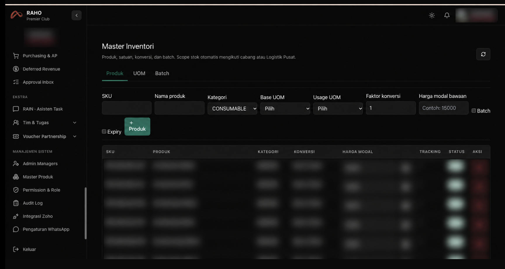
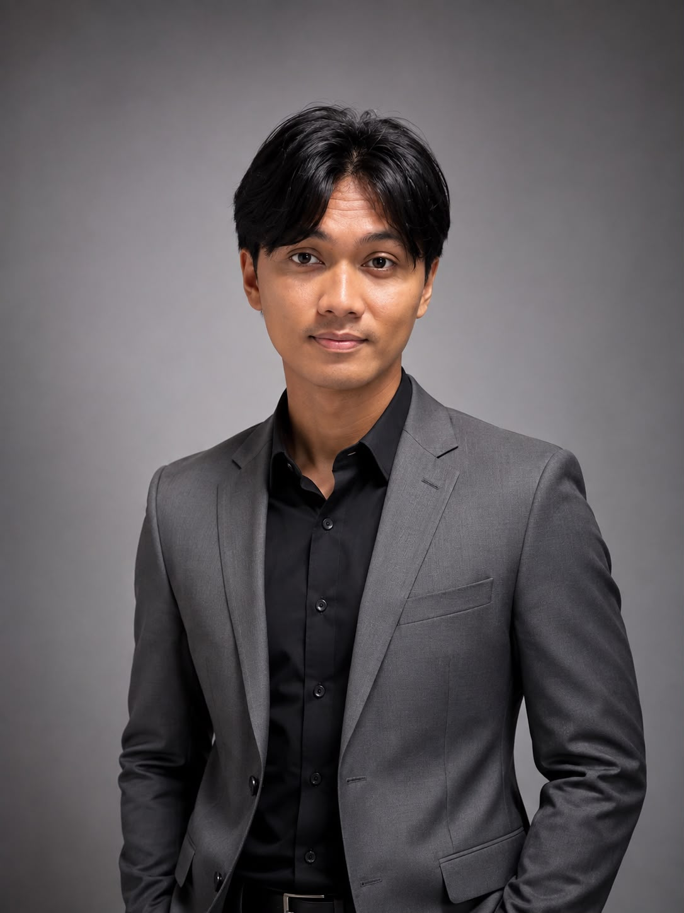
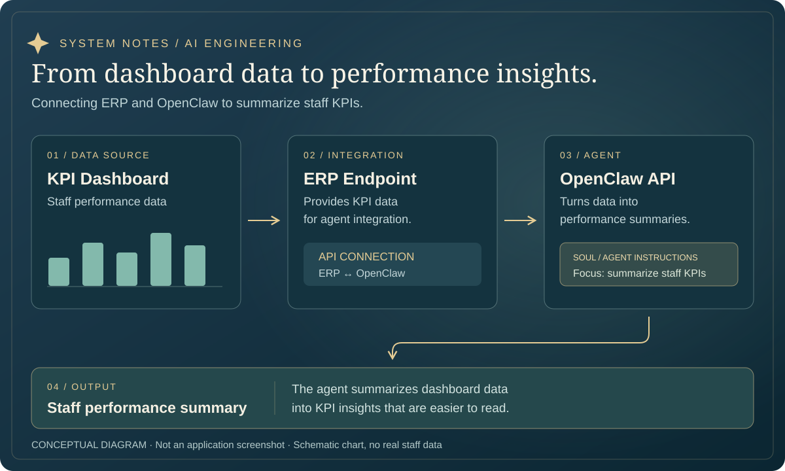

Fullstack Developer
ERP Raho Premier
An internal ERP system for inventory management and operational administration at Raho Premier.
Next.jsPostgreSQLPrismaRedis / BullMQ
Explore the ERP project
Hi, I am Samudra Yoga, a Fullstack Developer & AI Engineer building scalable web system, AI Agent, and an intelligent products.
Started with curiosity, moved forward through creation.

Architect of code and intelligence.
From understanding computer networks to designing AI systems, I am passionate about discovering how technology can address real-world needs.
I am a graduate of Computer Science at UPN Veteran Yogyakarta with experience in fullstack development, ERP project management, and the integration of multi-agent and RAG systems. For me, good solutions emerge from a clear understanding of the problem at hand.
Connected skills to bring an idea to a solution. Choose to explore.
Explore the development of business systems, AI solutions, and iOS applications.

An internal ERP system for inventory management and operational administration at Raho Premier.

An OpenClaw agent that summarizes staff performance using KPI dashboard data through an ERP endpoint.

A customer service chatbot with a knowledge base, RAG, a shared inbox, and handoffs to the support team.


A decision support app that helps players choose Mobile Legends heroes through five counter recommendations with explainable scores.
Journey from classroom and laboratory through business development
Tech Development
Raho Premier
Developed ERP, AI agent architecture, and chatbot WhatsApp dashboard.
Infrastructure & connectivity
PT Harrisma Buwana Jaya
Supported network infrastructure installation and configuration at client sites.
Practice & operations
Informatics Laboratory, UPNYK
Guided lab sessions and kept the learning environment ready.
Sharing knowledge
UPN Veteran Yogyakarta
Supported learning in Computer Networks and Programming Algorithms.
Bachelor’s degree in Computer Science · UPN Veteran Yogyakarta
An academic foundation for further exploration · GPA 3.52 / 4.00Have a technical challenge or an idea you want to build?
Let’s find the first step together.